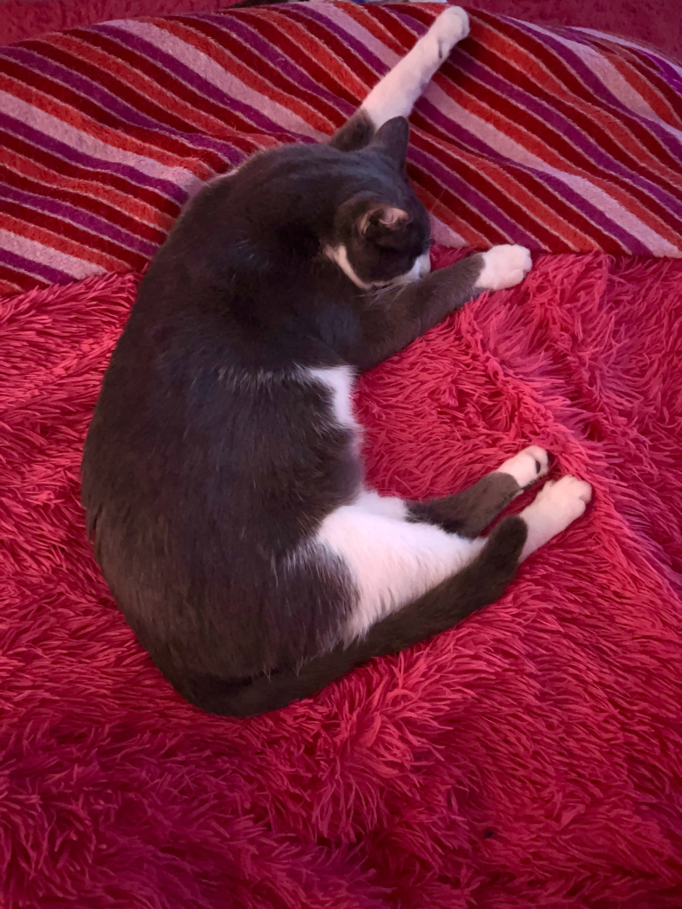
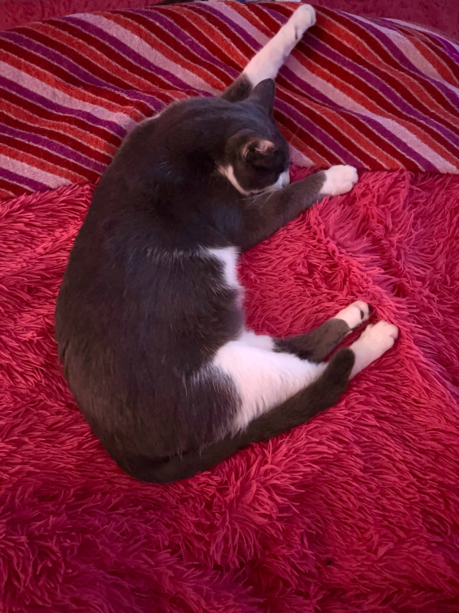

Happy Birthday Eve!!!
So you must be an adult now hahahah how's it feel? That's usually where starts one of the periods of most change in our life, and where we have doubts and anxiety towards the uncertain future. But usually all these things are bigger in our thoughts than they really are. so if you feel anything like this remember to always count with people you have! Your bro here, your other friends, your family, everyone! Because we'll always wish the best for you bro!
Talking now about our friendship, ours is one of the best I ever made online. I'll always have lots of good memories with you eve! I love every adjective that makes you who you are. Like how you're always sweet to people you care, or how friendly you were to me since the beginning even being super shy hahaha or your love for cats, or for drawing, or your contagious laugh, how affectionate you are and a billion other things! What I want to say is that I really love you a lot eve, and I'm really glad we're friends and you will forever be my very first bro hahahah you're the cutest and most lovely person ever, and I wish for you the best life can offer because you really deserve the world. So thanks for permitting that our friendship was created, by being open to a totally random person. Thanks for letting me know a bit of this universe of things that makes you this amazing girl, thanks for all the fun we had so far and that I hope we have in the future too hahaha and Happy 18 years!! I hope you enjoy your day as much as you can! And I'm really happy from the bottom of my heart to have met you an year ago eve, chatting with you is something that makes my day! I love your energy, and every aspect of your personality! Be always confident in the person you are!
With much love and care,
Your first mano, Kyu
 
